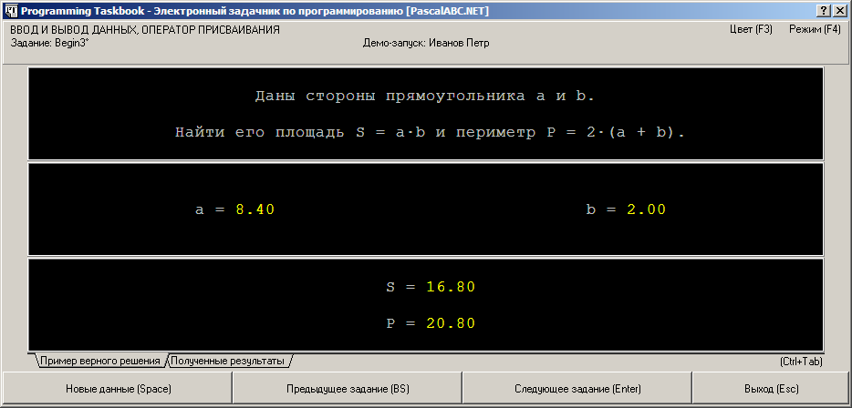
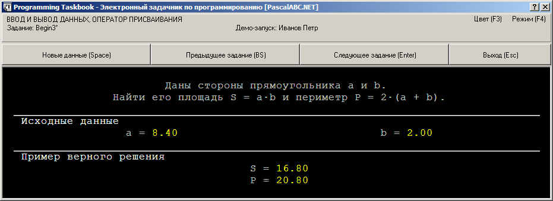
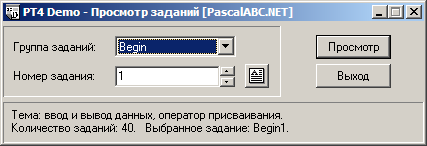

Для запуска задачника в демонстрационном режиме следует
при указании имени задания в процедуре Task
дополнить это имя символом ?, например:
Task('Begin12?');
Можно также указать символ ? сразу после имени темы, например, 'Begin?'.
В этом случае в окне задачника сразу будет отображено последнее задание указанной группы.
Демонстрационный режим задачника имеет следующие особенности:
На рисунке приведен вид окна задачника в демонстрационном режиме.

При использовании динамической компоновки, появившейся в версии 4.11, окно в демонстрационном режиме выглядит следующим образом:

Демонстрационный режим удобно использовать для быстрого просмотра всех заданий требуемой группы, а также различных вариантов исходных данных для требуемого задания.
Для демо-просмотра всех групп заданий, включенных в базовый набор, предназначен программный модуль
PT4Demo, который вызывается непосредственно из среды PascalABC.NET командой
меню «Модули | Просмотреть задания» (с данной командой связана также
кнопка  и клавиатурная
комбинация Shift+Ctrl+D).
и клавиатурная
комбинация Shift+Ctrl+D).
Ниже приводится вид окна модуля PT4Demo. В данном окне можно выбрать группу заданий (для быстрого перебора групп предназначены горячие клавиши Ctrl+[<] и Ctrl+[>]) и номер задания в пределах группы (номера можно перебирать с помощью комбинаций Ctrl+Shift+[<] и Ctrl+Shift+[>]).

Если задачник не зарегистрирован, то он всегда запускается в демонстрационном режиме (исключение составляют задания, доступные для выполнения в мини-варианте). Переключение в демонстрационный режим автоматически происходит также в случае, если в каталоге с выполняемой программой отсутствует файл результатов results.abc.
В версии 4.8 задачника добавлена возможность генерации текста формулировок учебных заданий и дополнительных пояснений к заданиям в виде html-страницы.
Для создания подобной страницы и ее немедленного отображения на экране (в html-браузере, установленном по умолчанию)
достаточно вызвать процедуру Task, указав в качестве ее параметра имя группы заданий или имя конкретного задания, дополненное
символом «#», например, Begin# или Begin3#.
При указании группы генерируется текст всех заданий, включенных в эту группу.
Процедуру Task с параметром, оканчивающимся символом #,
можно вызывать несколько раз, указывая различные имена групп или конкретных заданий; в результате созданная html-страница
будет содержать тексты всех заданий, указанных при различных запусках процедуры Task (в том же порядке).
Если при каком-либо вызове будет указано неверное имя группы или неверный номер задания в пределах группы, то выведется сообщение об ошибке, и html-страница создана не будет.
В создаваемую html-страницу включаются стилевые настройки, которые берутся из файла PT4Tasks.css, который ищется в текущем каталоге, а при его отсутствии в этом каталоге — в подкаталоге PT4 системного каталога PascalABC.NET. Если данный стилевой файл не найден, то стилевые настройки в html-страницу не добавляются.
При успешной генерации html-страницы она сохраняется в файле со стандартным именем PT4Tasks.html в рабочем каталоге приложения. Если в этом каталоге нельзя создать файл, то выводится сообщение об ошибке.
Возможность просмотра html-страниц с описанием текущей группы заданий добавлена и в программный модуль PT4Demo.
Для этого предусмотрена кнопка  (см. приведенный выше рисунок) и клавиша F2.
(см. приведенный выше рисунок) и клавиша F2.